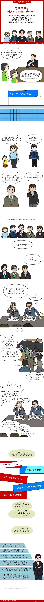

혈세지키는 체납 실태조사반 뒷이야기!

혈세를 지키지 위해 수 많은 방법을 이용하여 회수를 하려 하지만 인원이 한정되어 있어 힘들다는 점도 문제지요. 그래서 체납팀을 늘리려 해도 비용이 만만치 않아 이를 일용직으로 구하려고 해보지만 법적으로 체납정보를 일용직에게 제공할 수는 없다고 합니다. 이건 맞는 말이라고 봐요. 아무리 그래도 체납자의 체납정보, 집주소, 연락처 등을 제공하기에는 위험부담이 있으니까요.
그래서 체납여부만 일용직에게 제공하여 납부하도록 직접 찾아가 안내하고 체납이 가능해 보이는지 정보만 사전조사를 한 뒤 체납팀이 2차로 진행을 적용하는 방법을 선택했다고 해요. 이런 방식에는 장점이 하나 있지요. 체납이 어렵다고 판단되는 부류에게는 체납이 가능한 방법을 안내해 줄 수 있다는 것이지요.
그런데 단지 이것만으로도 반대를 한다면 이해 할 수 있나요?
1년에 회수 보류되는 금액이 7조원에 달한다는데 이 정도는 용납해야한다고 봐요. 회수해서 체납자 줄이고, 그 돈으로 새로운 일자리도 창출하고, 세금도 밀릴정도로 힘든 사람들을 파악해서 분할 납부나 납무 유예처리, 일자리 알선 등으로 연계해주면 그보다 좋은 복지가 뭐가 있겠어요.
이번 경기도에서 이를 진행하기 위한 체납관리 기간제 근로자를 1.309명 모집한다고 합니다. 체납 관리단으로 활동하면서 경제력 확인, 체납 사실 안내, 애로사항 청취 등을 진행하는 업무랍니다. 필요하신 분들 거주지 관할 시군 홈페이지 공고문 참고하세요. ^^*